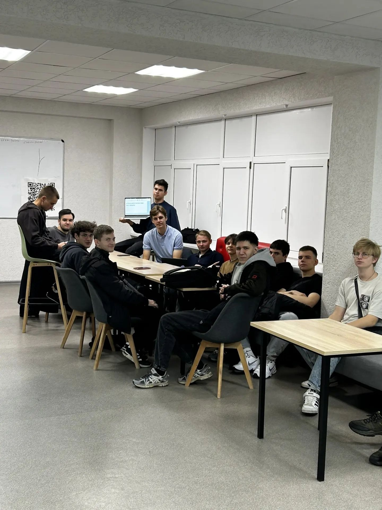

Учебная группа ПИЖ-б-о-26-1
Направление подготовки

- Университет
- Северо-Кавказский федеральный университет.
- Направление
- Программная инженерия.
- Профиль
- Инженерия сложных программных систем.
- Курс
- Первый.
Пример профильной темы представлен на странице об информационной безопасности сложных систем.
Студенты группы
- Антонова Анна Сергеевна
- Антонюк Леонид Владиславович
- Бабаян Артём Артемович
- Бахов Тамерлан Алимович
- Бирюков Егор Александрович
- Буров Иван Васильевич
- Головко Денис Григорьевич
- Дерябин Иван Евгеньевич
- Згонников Иван Андреевич
- Золоев Казбек Русланович
- Ивлев Владислав Антонович
- Инюшкин Иван Юрьевич
- Киркачев Максим Евгеньевич
- Ковалёв Вадим Евгеньевич
- Колдунов Григорий Сергеевич
- Куслин Глеб Витальевич
- Кучеров Максим Александрович
- Литовка Николай Николаевич
- Лоиков Владислав Сергеевич
- Лоскутова Варвара Сергеевна
- Мартиросов Владимир Самвелович
- Марьевская Диана Дмитриевна
- Мирошников Артём Александрович
- Ревыкин Никита Денисович
- Рожкова Александра Владимировна
- Сапронова Пелагея Дмитриевна
- Степаненко Артём Евгеньевич
- Стерликов Егор Ильич
- Ташулин Юрий Вячеславович
- Цоколов Станислав Сергеевич